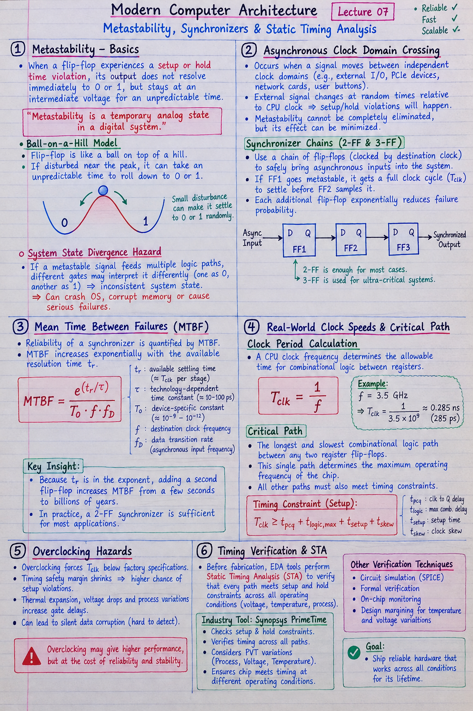

Short Notes & Visual Summary
Quick summary and key formulas for Lecture 07:
- Metastability Definition: When a flip-flop experiences a setup/hold violation, its output hovers at an invalid intermediate voltage (neither 0 nor 1) for an unpredictable settling duration.
- MTBF Formula: \(\text{MTBF} = \frac{e^{\left(t_r / \tau\right)}}{T_o \cdot f \cdot f_D}\) (Exponentially increases with resolution time \(t_r\)).
- Synchronizer Chain: Cascading 2 or 3 D flip-flops in series to resolve asynchronous inputs before driving core CPU logic.
- Critical Path Constraint: \(T_{\text{clk}} \ge t_{\text{pcq}} + t_{\text{logic, max}} + t_{\text{setup}} + t_{\text{skew}}\)

Click image to open high-resolution version in new tab
The Physics of Metastability
1.1 Ball-on-a-Hill Physical Model
When a flip-flop's setup or hold time is violated, the internal feedback loop is caught mid-transition. Physically, this is modeled as a ball balanced on the sharp peak of a hill between two valleys (0 and 1).
Instead of snapping to logic 0 or 1 instantly, the voltage lingers in an intermediate analog range for an indeterminate resolution time before randomly tipping into 0 or 1.
1.2 System State Divergence Hazards
If a metastable signal feeds into multiple downstream logic branches, one gate may interpret the invalid voltage as a 0 while another interprets it as a 1. This causes the CPU state to diverge, crashing the operating system or corrupting memory.
Asynchronous Clock Domain Crossing
2.1 Unavoidable Metastability in Asynchronous Inputs
Metastability cannot be eliminated 100% when signals cross between independent clock domains (e.g., external PCIe devices, network cards, user buttons). Because the external signal changes at random times relative to the CPU clock, setup/hold violations will physically happen.
2.2 Synchronizer Chains (2-FF & 3-FF Cascades)
To safely handle asynchronous inputs, chip designers pass the raw signal through a Synchronizer Chain (2 or 3 D flip-flops connected in series driven by the destination clock).
If Flip-Flop 1 becomes metastable, it is granted an entire clock cycle (\(T_{\text{clk}}\)) to settle before Flip-Flop 2 samples its output. This exponential delay drops the probability of a system crash to near zero.
Mean Time Between Failures (MTBF)
3.1 Exponential Resolution Formula
The reliability of a synchronizer is quantified by its Mean Time Between Failures (MTBF):
Where \(t_r\) is the available settling time, \(\tau\) and \(T_o\) are transistor parameters, \(f\) is the clock frequency, and \(f_D\) is the data transition rate.
3.2 Engineering MTBF for System Reliability
Because \(t_r\) sits in the exponent, adding a second synchronizer flip-flop increases the MTBF from a few seconds to billions of years—ensuring the hardware will be obsolete long before a metastability failure occurs.
Real-World Clock Speeds & Critical Path
4.1 Calculating Clock Period (e.g., 3.5 GHz = 0.29 ns)
A CPU clock frequency determines the allowable window for all combinational arithmetic between registers:
4.2 Critical Path & Static Timing Analysis (STA)
The Critical Path is the longest, slowest combinational logic path between any two register flip-flops in the processor. This single slowest path establishes the absolute maximum operating frequency of the chip.
Overclocking Hazards & Verification
5.1 Setup Time Margin Shrinkage & Thermal Drift
Overclocking forces the clock period \(T_{\text{clk}}\) below factory specifications. As \(T_{\text{clk}}\) shrinks, the timing safety margin disappears. Thermal expansion and voltage drops increase gate delays, causing setup violations and silent data corruption.
5.2 Timing Verification Tools (Synopsys PrimeTime)
Before a multi-billion transistor chip is fabricated, Electronic Design Automation (EDA) software like Synopsys PrimeTime performs Static Timing Analysis (STA) to verify that every path meets setup and hold constraints across all operating temperatures and voltages.
Original PDF Notes
Below is the original PDF document for your reference: